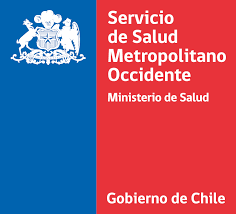

Cargando el cruce…
Qué conciliar primero
Situación de cada tipología en el CTAR
Gestión de casos
Registre responsable, plazo y próxima acción. El avance queda en este navegador; use Exportar seguimiento para compartirlo.

Hospital Dr. Félix Bulnes · Cruce entre el Plan CTAR y el registro del Hospital
Registre responsable, plazo y próxima acción. El avance queda en este navegador; use Exportar seguimiento para compartirlo.